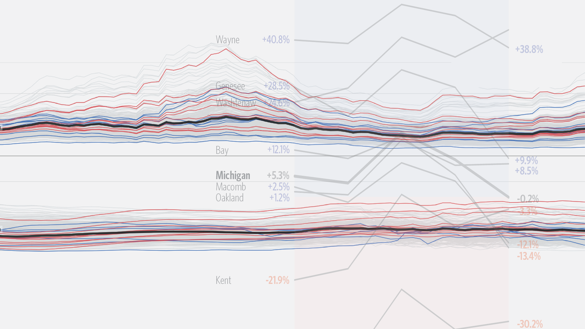
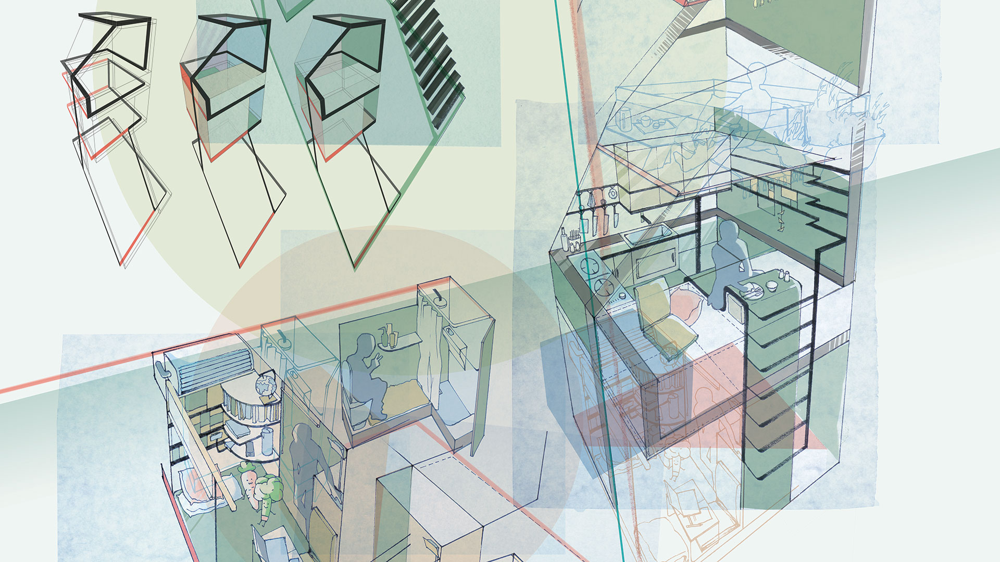
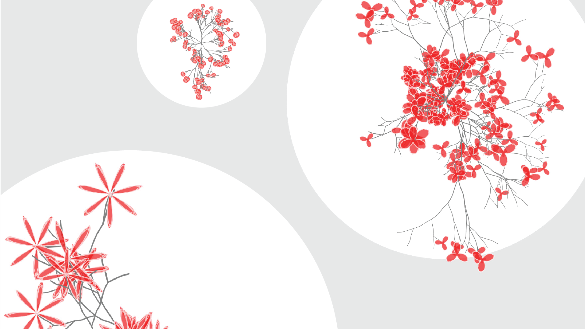

I'm
I'm Willa Hua
Glad you found me here.
I learn fast, finishing one Master's and two Bachelor's in 5 years and now stepping into the job market.
As an analyst, I take ownership of my business problem-solving, from developing requirements to delivering solutions.
I extract and analyze transactional and operational data with Python, R, and SQL. I communicate insights through crafted presentations, supplemented by 2 years of Tableau experience.
I'm a visualization enthusiast who firmly believes in "Show, not Tell," with a versatile skill set in Business Intelligence, Data Mining and Modeling, Front-end development and Graphic Design. I'm open for opportunities in technology, consulting and related fields in 2021.

Data

Design

Interactives